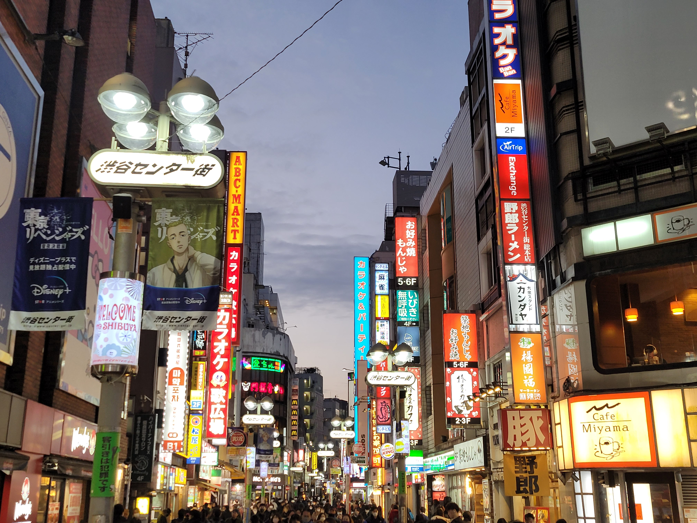

Go Back
How to spend a 10 hour layover in Tokyo

Tokyo is the largest city in the world with a metro population of about 38 million people. It literally has the population of my whole country (Canada) in just one city! Tokyo has long been a popular tourist destination due to its unique culture, hospitable locals, excellent infrastructure, food and shopping options. So far I've only spent a 10 hour layover exploring the Shibuya neighbourhood. I'd love to return to explore more of this vast city as the activities and things to discover seem like they would never end. You can get lost in the narrow little alleyways and find tons of small underground businesses that contribute to the cities unique vibe. Due to the country's excellent infrastructure its quite simple to venture out into the city during a long layover. It can even be quite budget friendly and is an experience I'd highly recommend if you have a long stopover here.
Both airports in Tokyo (Haneda and Narita) both have train lines that take you directly into the city. The Haneda airport is closer to the Shibuya area and offers the easier transport route. The train system here is sophisticated and arrives right at the airport. To get to Shibuya I had to get on the train from the airport and transfer once onto a second train. The crowded and very developed train system can be a fascinating introduction to the city. I rememeber curiously looking out of the window being amazed at how quiet the city of 38 million people felt. The train is quite cheap and cost about 3.50 usd for a one way from Haneda to Shibuya. As Tokyo is massive there are many other popular districts such as Shinjuku. The good news is that Tokyo is so well connected that it's surely accessible by train. I chose to try to just stay in one neighbourhood as my visit was short and after doing some research decided Shibuya was probably the best place to go on a first quick visit to Tokyo.
Shibuya Crossing is the first thing you see when you exit the Shibuya metro. The famous crosswalk has the largest pedestrian traffic in the world and you'll immediately be swept into the see of humanity as you cross it. Immediately adjacent to the crossing are thousands of businesses ranging from restaurants to clothing to bars and more. This was a really cool experience. You'll experience sensory overload with all the bright lights, towering buildings and countless people. However for how crowded it is it felt extremely safe. This is a great introduction to the city as well as an iconic spot in a vibrant neighbourhood. Also since it's just a crosswalk it costs no money other than the metro ticket to get there! From here I walked North about 15-20 mins to the area with the Meiji Jingu Shrine and Takeshita St which I mention below.
The Meiji Jingu Shrine is a famous shrine in the Shibuya neighbourhood. It's dedicated to the deified spirits of Emperor Meiji and his consort, Empress Shoken. Unfortunately I arrived in Shibuya around 4 30 pm which was around when the shrine closed. It closes with the sunset which actually changes each month but January has a sunset time of around 4 30 pm so I wasn't able to visit. It's a very pictureque shrine next to a large park. If I were able to visit during the daytime on a layover or just visit Tokyo for a longer stay I'd certainly include this on my itinerary and still hope I can visit it in the future.
Takeshita Street is a quirky shopping street next to the Meiji Jingu shrine area. It's a good street to find some unique and interesting products as well as a variety of restaurants and food options all while enjoying the experience of Tokyo. Stores on Takeshita Street include major chains such as The Body Shop, McDonald's, and 7-Eleven, but most of the businesses are small independent shops that carry an array of styles.
If you want to stop for a pint somewhere I'd recommend The Hub British Pub. It's actually a franchise so as you're exploring you may pass a few of these in different locations. There is one located right in the Shibuya crossing area. This is a favourite spot with expats and locals alike. I was able to enjoy a pint here and even talk a bit with a friendly Japanese/ American who told me different interesting facts about Tokyo.
There are plenty of fantastic Japanese foods worth trying which surely would be incredible in Tokyo such as sushi, gyudon and curries. My choice however was a bowl of ramen. I will say that ramen wasn't something that always interested me that much up until the moment I tried it here. Since then I've been searching for ramen places in whichever city I'm in and appreciate it so much more than before. There are literally hundreds of ramen places in Shibuya. A famous franchise that I heard was great for ramen is Ichiran, however when I tried to go to one there was always a massive lineup (an hour or more). I opted for a small place on the central Shibuya walking street. It's safe to say it was the best bowl of ramen I had in my life. Whether it's ramen or one of the other foods I mentioned you cannot pass up an opportunity to have a meal in this city. It's worth mentioning that the whole restaurant experience in Tokyo is different too. It's very common to prepay for your meal at a little vending machine type thing. You insert your bill and push the button of the dish you want and it prints you a ticket. Then you give the ticket to a staff member who will prepare your meal for you. It may be hard at times to know exactly what the dishes are as Japanese use a completely different alphabet consisting of characters. I'd say just choose the most expensive ramen which should be around 1000 yen and enjoy whatever comes.